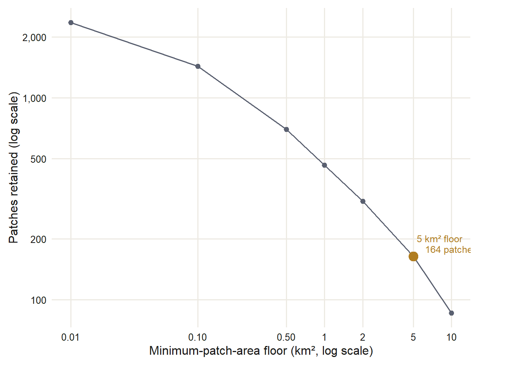

The Protected-Land Fabric
Question 1 — Landscape
The first question is about the ground itself, before any animal moves across it. How much protected open space is there in the ten-county Bay Area, how is it held, and how does it break apart when you look at it the way a wide-ranging carnivore would — as a set of patches large enough to hold a home range, or not?
Two kinds of protection
Protected land here comes in two forms, and the difference matters for a puma. Fee land is owned outright for conservation: the parks, watershed lands, and open-space preserves that most people picture. Easement land is private ground — often working ranchland — where the owner has sold or donated the right to develop it, so it stays open. To a puma crossing it, an easement grazing parcel next to a fee preserve is one continuous piece of habitat. Tenure is a legal distinction, not an ecological one.
The project keeps both. The connectivity track uses a union of the two sources: CPAD fee land and CCED conservation easements, merged into one protected-land layer, with fee taking precedence wherever the two map the same ground so no area is counted twice.
How much, and how much is new
The union holds 5,996.5 km² of protected land across the ten counties. Fee land accounts for 4,720.8 km² of that, spread over 1,129 CPAD units. The easements add 1,275.7 km² of genuinely new protected ground — a roughly 27% increase over the fee footprint alone — after removing 498.2 km² where easements overlapped land already protected in fee.
That 27% is the point worth holding on to. Conservation easements are not a rounding error on the map of Bay Area protected land. More than a quarter of the connectivity fabric — much of it working ranchland along the inner Coast Ranges — exists only because of easements. Leave them out and the protected-land picture looks substantially more fragmented than it is.
One limit on this comes with the easement data. Where the easement layer has no record, that does not mean the land is unprotected — only that no easement is mapped there. The union labels tenure where the data exists; it does not fill gaps. Read the easement totals as a floor, not a full accounting.
From protected land to habitat patches
A wide-ranging carnivore does not experience protected land as a legal inventory. It experiences it as patches — connected pieces of open ground it can settle in or move through. So the next step dissolves the union: fee and easement melt together wherever they touch, and the result is cut into distinct patches by physical contiguity, not by ownership.
Most of those patches are small. The patch-area distribution is a smooth size continuum, from thousands of tiny fragments up to a handful of very large blocks, with no natural break to cut on. A break would let the data choose the threshold; there isn’t one, so the threshold comes from the animal instead.
A puma home range spans tens to hundreds of square kilometres. A protected patch smaller than about 5 km² cannot hold a meaningful fraction of even one such range, so it works as a stepping-stone at most, not as a place a resident animal lives. Setting that 5 km² floor — an ecological scale, not a number read off a curve — leaves 164 core patches large enough to anchor a home range. The floor still retains 82.5% of all protected area, because the area that gets dropped sits in thousands of tiny fragments that together hold very little ground.
This is the floor scan, not the raw size distribution: it shows how many patches survive each candidate threshold, and it is the evidence that the 5 km² cut is not severe. Most of what the floor removes is thousands of tiny fragments; the protected area they hold barely moves the total.
This is the structural shape of the problem. Of nearly 4,000 protected patches, only 164 are large enough to anchor a wide-ranging carnivore, and the habitat value concentrates in a small number of very large cores — the Santa Cruz Mountains block at 177 km², the southern Diablo Range at 500 km², and a short list of others. The rest of the protected fabric is stepping-stones and fragments between them.
What this section does and does not claim
This is a description of the protected land, built from protected-area boundaries alone. It uses no occurrence records, so the detection-effort caveat that governs the occurrence maps later in this project does not apply here — there is nothing in these numbers that reflects where people looked for animals. The patches are where the protected ground is, not where the cats were seen.
What it does not tell you is whether an animal can actually move between those 164 cores. A patch being large is not the same as a patch being reachable. Two cores can sit a few kilometres apart on the map and be effectively cut off from each other by a freeway, a reservoir, or the developed bayshore. Turning this static fabric into a question about movement — which cores connect, and where the connections are weakest — is the work of the puma connectivity section (Question 3).